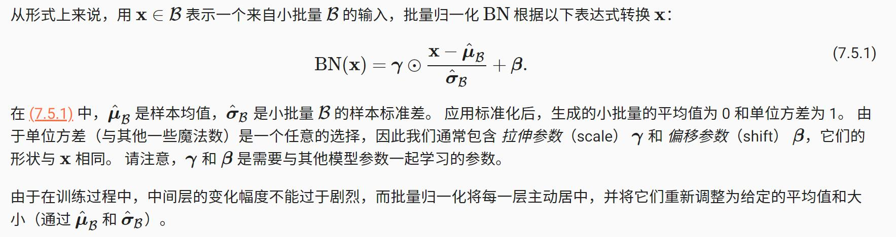
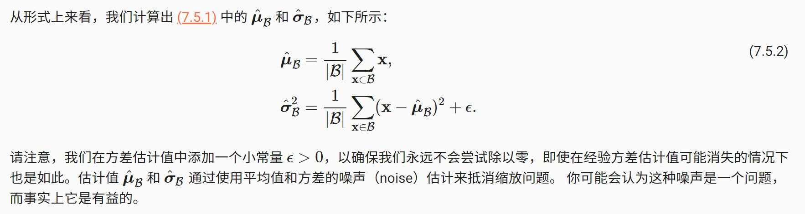
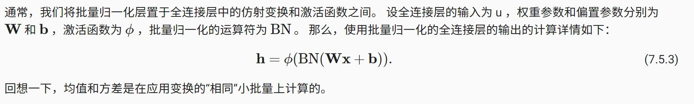

批量归一化
训练深层神经网络是十分困难的，特别是在较短的时间内使他们收敛更加棘手。 *在本节中，我们将介绍 批量归一化（batch normalization） [Ioffe & Szegedy, 2015] ，这是一种流行且有效的技术，可持续加速深层网络的收敛速度。* 再结合在 7.6节 中将介绍的残差块，批量归一化使得研究人员能够训练 100 层以上的网络。
训练深层网络
为什么需要批量归一化层呢？让我们来回顾一下训练神经网络时出现的一些实际挑战。
首先，数据预处理的方式通常会对最终结果产生巨大影响。 回想一下我们应用多层感知机来预测房价的例子（ 4.10节 ）。 使用真实数据时，我们的第一步是标准化输入特征，使其平均值为0，方差为1。 直观地说，这种标准化可以很好地与我们的优化器配合使用，因为它可以将参数的量级进行统一。
第二，对于典型的多层感知机或卷积神经网络。当我们训练时，中间层中的变量（例如，多层感知机中的仿射变换输出）可能具有更广的变化范围：不论是沿着从输入到输出的层，跨同一层中的单元，或是随着时间的推移，模型参数的随着训练更新变幻莫测。 批量归一化的发明者非正式地假设，这些变量分布中的这种偏移可能会阻碍网络的收敛。 直观地说，我们可能会猜想，如果一个层的可变值是另一层的 100 倍，这可能需要对学习率进行补偿调整。
第三，更深层的网络很复杂，容易过拟合。 这意味着正则化变得更加重要。
批量归一化应用于单个可选层（也可以应用到所有层），其原理如下：在每次训练迭代中，我们首先归一化输入，即通过减去其均值并除以其标准差，其中两者均基于当前小批量处理。 接下来，我们应用比例系数和比例偏移。 正是由于这个基于批量统计的标准化，才有了批量归一化的名称。
请注意，如果我们尝试使用大小为 1 的小批量应用批量归一化，我们将无法学到任何东西。 这是因为在减去均值之后，每个隐藏单元将为 0。 所以，只有使用足够大的小批量，批量归一化这种方法才是有效且稳定的。 请注意，在应用批量归一化时，批量大小的选择可能比没有批量归一化时更重要。


事实证明，这是深度学习中一个反复出现的主题。 由于理论上尚未明确表述的原因，优化中的各种噪声源通常会导致更快的训练和较少的过拟合：这种变化似乎是正则化的一种形式。
批量归一化层
批量归一化和其他图层之间的一个关键区别是，由于批量归一化在完整的小批次上运行，因此我们不能像以前在引入其他图层时那样忽略批处理的尺寸大小。 我们在下面讨论这两种情况：全连接层和卷积层，他们的批量归一化实现略有不同。
全连接层

卷积层
同样，对于卷积层，我们可以在卷积层之后和非线性激活函数之前应用批量归一化。 当卷积有多个输出通道时，我们需要对这些通道的“每个”输出执行批量归一化，每个通道都有自己的拉伸（scale）和偏移（shift）参数，这两个参数都是标量。 假设我们的微批次包含 mm 个示例，并且对于每个通道，卷积的输出具有高度 p 和宽度 q。 那么对于卷积层，我们在每个输出通道的 m⋅p⋅q 个元素上同时执行每个批量归一化。 因此，在计算平均值和方差时，我们会收集所有空间位置的值，然后在给定通道内应用相同的均值和方差，以便在每个空间位置对值进行归一化。
预测过程中的批量归一化(这里先了解，在训练模式下和预测模式下，批量归一化的方式不同，具体用的时候再研究代码)
正如我们前面提到的，批量归一化在训练模式和预测模式下的行为通常不同。 首先，将训练好的模型用于预测时，我们不再需要样本均值中的噪声以及在微批次上估计每个小批次产生的样本方差了。 其次，例如，我们可能需要使用我们的模型对逐个样本进行预测。 一种常用的方法是通过移动平均估算整个训练数据集的样本均值和方差，并在预测时使用它们得到确定的输出。 可见，和 dropout 一样，批量归一化层在训练模式和预测模式下的计算结果也是不一样的。
1 | import torch |
简明实现
除了使用我们刚刚定义的 BatchNorm ，我们也可以直接使用深度学习框架中定义的 BatchNorm 。 该代码看起来几乎与我们上面的代码相同。
1 | net = nn.Sequential( |
争议
直观地说，批量归一化被认为可以使优化更加平滑。 然而，我们必须小心区分投机直觉和对我们观察到的现象的真实解释。 回想一下，我们甚至不知道简单的神经网络（多层感知机和传统的卷积神经网络）为什么如此有效。 即使在 dropout 和权重衰减的情况下，它们仍然非常灵活，因此无法通过常规的学习理论泛化保证来解释它们是否能够泛化到看不见的数据。
重要的是将这些指导性直觉与既定的科学事实区分开来。 最终，当你掌握了这些方法，并开始撰写自己的研究论文时，你会希望清楚地区分技术和直觉。
小结
- 在模型训练过程中，批量归一化利用小批量的均值和标准差，不断调整神经网络的中间输出，使整个神经网络各层的中间输出值更加稳定。
- 批量归一化在全连接层和卷积层的使用略有不同。
- 批量归一化层和 dropout 层一样，在训练模式和预测模式下计算不同。
- 批量归一化有许多有益的副作用，主要是正则化。另一方面，”减少内部协变量偏移“的原始动机似乎不是一个有效的解释。